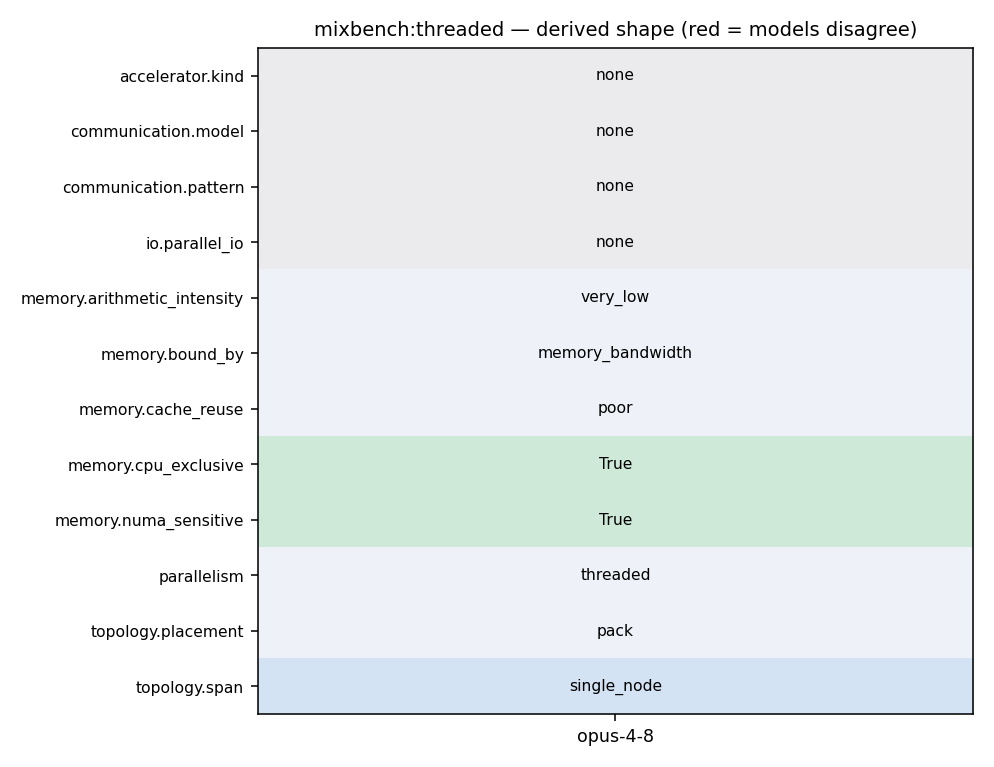

OMP_NUM_THREADS=N ./mixbench-cpu
26 27 #pragma omp simd aligned(data : 64) reduction(+ : sum) 28 for (size_t i = 0; i < static_chunk_size; i++) { 29 Element t = data[i]; 30 for (size_t j = 0; j < compute_iterations; j++) { 31 t = t * t + f; 32 } 33 sum += t; 34 } 35 return sum; 36 }
1 # mixbench 2 The purpose of this benchmark tool is to evaluate performance bounds of GPUs (or CPUs) on mixed operational intensity kernels. The executed kernel is customized on a range of different operational intensity values. Modern GPUs are able to hide memory latency by switching execution to threads able to perform compute operations. Using this tool one can assess the practical optimum balance in both types of operations for a compute device. CUDA, HIP, OpenCL and SYCL implementations have been developed, targeting GPUs, or OpenMP when using a CPU as a target. 3 4 ## Implementations 5
44 Element f[] = {data[0], data[1], data[2], data[3], 45 data[4], data[5], data[6], data[7]}; 46 47 #pragma omp simd aligned(data : 64) reduction(+ : sum) 48 for (size_t i = 0; i < static_chunk_size; i++) { 49 Element t[] = {data[i], data[i], data[i], data[i], 50 data[i], data[i], data[i], data[i]}; 51 for (size_t j = 0; j < compute_iterations / 8; j++) { 52 t[0] = t[0] * t[0] + f[0]; 53 t[1] = t[1] * t[1] + f[1]; 54 t[2] = t[2] * t[2] + f[2]; 55 t[3] = t[3] * t[3] + f[3]; 56 t[4] = t[4] * t[4] + f[4]; 57 t[5] = t[5] * t[5] + f[5]; 58 t[6] = t[6] * t[6] + f[6]; 59 t[7] = t[7] * t[7] + f[7]; 60 } 61 if constexpr (compute_iterations % 8 > 0) { 62 t[0] = t[0] * t[0] + f[0]; 63 }
44 Element f[] = {data[0], data[1], data[2], data[3], 45 data[4], data[5], data[6], data[7]}; 46 47 #pragma omp simd aligned(data : 64) reduction(+ : sum) 48 for (size_t i = 0; i < static_chunk_size; i++) { 49 Element t[] = {data[i], data[i], data[i], data[i], 50 data[i], data[i], data[i], data[i]}; 51 for (size_t j = 0; j < compute_iterations / 8; j++) { 52 t[0] = t[0] * t[0] + f[0]; 53 t[1] = t[1] * t[1] + f[1]; 54 t[2] = t[2] * t[2] + f[2]; 55 t[3] = t[3] * t[3] + f[3]; 56 t[4] = t[4] * t[4] + f[4]; 57 t[5] = t[5] * t[5] + f[5]; 58 t[6] = t[6] * t[6] + f[6]; 59 t[7] = t[7] * t[7] + f[7]; 60 } 61 if constexpr (compute_iterations % 8 > 0) { 62 t[0] = t[0] * t[0] + f[0]; 63 }
144 measurements.push_back(duration); 145 } 146 147 // then try with half threading 148 if (base_omp_get_max_threads > 1) { 149 omp_set_num_threads(base_omp_get_max_threads / 2); 150 151 for (int i = 1; i < total_half_thread_runs; i++) { 152 duration = op(); 153 measurements.push_back(duration); 154 } 155 } 156 157 return *std::min_element(std::begin(measurements), std::end(measurements)); 158 }
16 ## Notes 17 18 `mixbench-cpu` has been developed with `g++` (`gcc`) in mind. 19 As such, it has been validated on the particular compiler that it vectorizes and properly 20 unrolls the vectorized instructions as intended, in order to approach peak performance. 21 `clang` on the other hand, at the time of development, has been observed that it does not 22 properly produce optimum machine instruction sequences. 23 The nature of computations for loop iteration in this benchmark is inherently sequential. 24 So, it is essential that the compiler adequatelly unrolls the loop in the generated code 25 so the CPU does not stall due to dependencies. 26 27 ## Building notes 28
5 * Contact: Elias Konstantinidis <ekondis@gmail.com> 6 **/ 7 8 #include <omp.h> 9 10 #include <algorithm> 11 #include <chrono>
94 Element sum = 0; 95 constexpr size_t static_chunk_size = 4096; 96 97 #pragma omp parallel for reduction(+ : sum) schedule(static) 98 for (size_t it_base = 0; it_base < len; it_base += static_chunk_size) { 99 sum += bench_block<Element, compute_iterations, static_chunk_size>( 100 &src[it_base]);
1 # mixbench-cpu 2 3 This is the OpenMP implementation of mixbench, targeted to CPUs. 4 Theoretically, it could also target GPU accelerators but it has been developed 5 with the CPUs in mind. 6 In particular, it has been tailored for GCC compiler (see below for more info). 7 8 ## Running in docker
1 # mixbench-cpu 2 3 This is the OpenMP implementation of mixbench, targeted to CPUs. 4 Theoretically, it could also target GPU accelerators but it has been developed 5 with the CPUs in mind. 6 In particular, it has been tailored for GCC compiler (see below for more info).